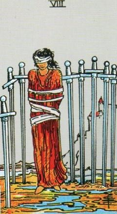
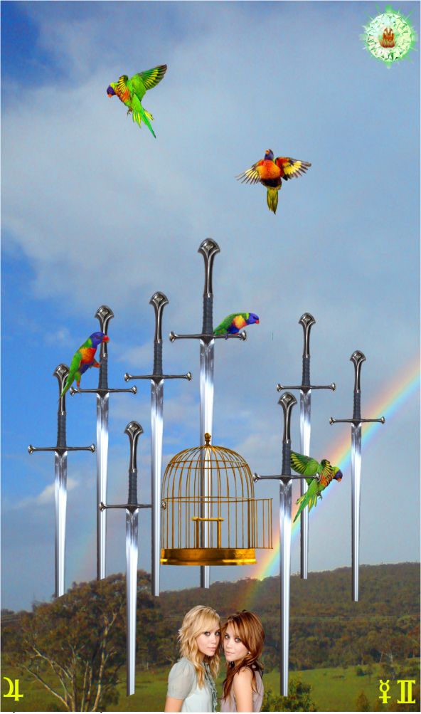
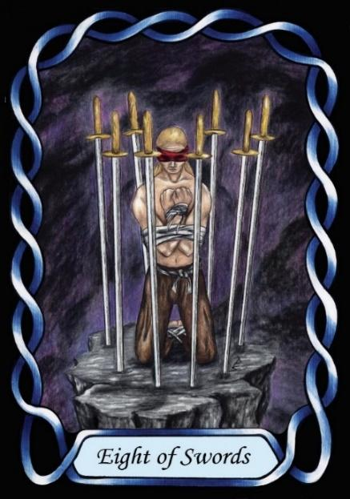

Eight of Swords



Sign |
|
Third: Communicate |
|
Sign Ruler |
|
Element |
Air: interaction |
Modality |
|
Symbol |
Twins |
Decan |
|
Decan Ruler |
|
Time |
May 22 - 31 |
Freedom Gemini I
An Apprentice in communication, ruled by Mercury and Jupiter, wants to expand their mind and to express themselves freely. However, social interaction needs rules to avoid hurting others. Freedom of speech is a noble ideal, but the Master will understand the need for diplomacy which they dos not yet have.
Goldschneider Personology
These Geminis are largely concerned with their personal freedom. They can see any form of control as a potential threat, and can have difficulties in normal employment situations. They are best left to solve their own problems in their own way.
Interpretation of RWS Imagery
A Gemini-one is bound and surrounded by Swords. She feels constrained and wants her freedom, of both thought and action. They tend to only act on their own ideas, rejecting ideas and advice of others
Pymander Imagery
Rainbow lorikeets are beautiful, but more-so when they are uncaged.
Summary
Valuing personal freedom, this Gemini Apprentice struggles with constraints on their expression, requiring self-awareness and diplomacy to navigate social interactions effectively.